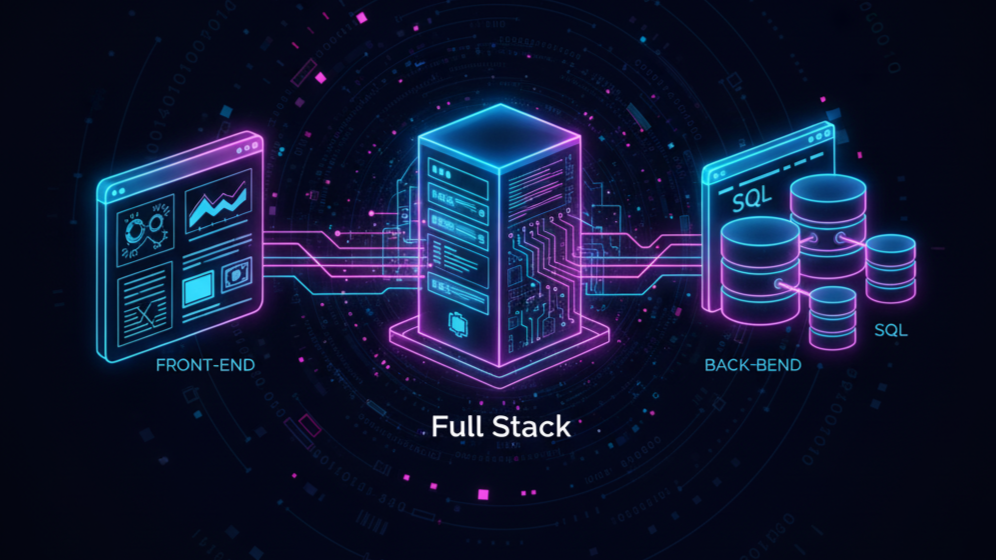
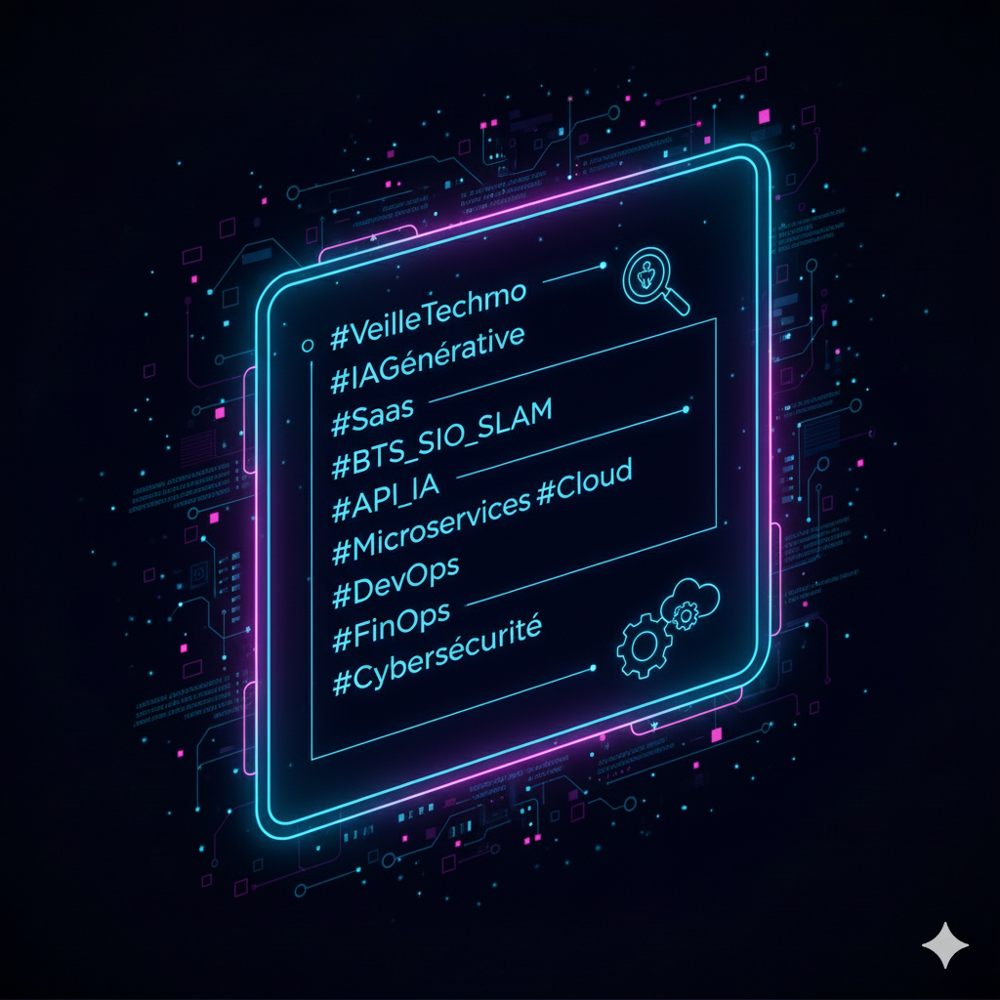
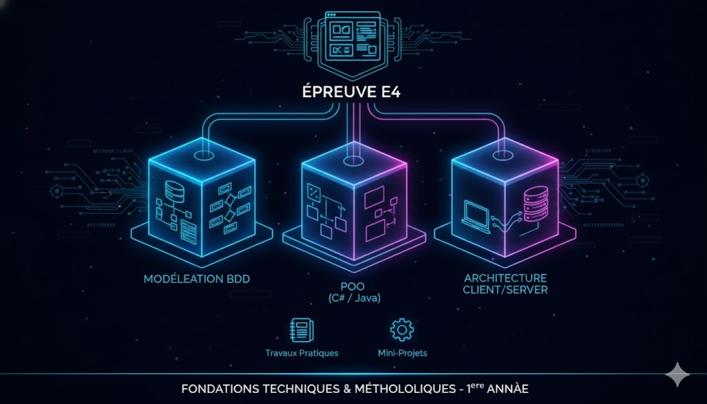

Bonjour, je suis
Étudiante en BTS Services Informatiques aux Organisations
(option SLAM) à ENSITECH.
Passionnée par le développement web, l’analyse de données
et les nouvelles technologies,
je suis actuellement à la recherche
d’une alternance pour l’année 2026–2027
ainsi que d’un stage afin d’approfondir mes compétences
et de participer à des projets concrets.
Ouverte aux postes en développement ou en support IT,
je souhaite mettre ma curiosité et ma rigueur au service d’une équipe dynamique.
Rythme d’alternance : 3 jours en entreprise / 2 jours à l’école.
Compétences techniques

Développement Web
Création d’interfaces modernes et dynamiques avec HTML, CSS, JavaScript,React,TailwindCSS et NextJS.
Conception de sites web , Application Web et mise en ligne. Bonne compréhension du modèle client-serveur.

Base de données
Conception et gestion de bases relationnelles avec SQL,BigQuery et Prisma.
Requêtes optimisées, maintenance et sécurité des données.

Développement Logiciel
Programmation orientée objet en Python.
Création d’applications simples et gestion de versions via Git/GitHub.
Analyse de données
Certification Google Data Analytics.
Maîtrise du cycle complet : collecte, nettoyage, traitement, visualisation et reporting.
Voici la stack technologique que j'apprends et que je maîtrise
pour donner vie à mes projets :
Projets
Pokédex


Fonctionnalités Clés:
- Présentation des Pokémon vedettes avec leur nom et leurs types.
-Une barre de recherche permet de trouver rapidement un Pokémon spécifique.
- Bouton pour ajoutez et créez un nouveau pokemon via un formulaire
- Bouton pour supprimer et modifiez les pokémons dans la fiche de stats
- Accès à une fiche complète affichant des statistiques essentielles telles que les Points de Vie, les Dégâts, les
Types et une date de création.
Démonstration Technique: Ce projet illustre ma capacité à gérer des états complexes, à intégrer
des API (ou des données structurées) et à créer des composants réutilisables dans un environnement visuellement
engageant avec une palette de couleurs profonde et un design card-based.
Connaissance acquise : React(Hook,Composant,Function,Routing),TailwindCSS,TypeScript,Api Rest
TODO-APP
Fonctionnalités Clés:
- Les utilisateurs peuvent créer de nouvelles tâches et leur assigner l'une des trois priorités définies : Urgente,
Moyenne ou Basse.
-Le catalogue de tâches peut être filtré instantanément par priorité (Urgente, Moyenne, Basse) ou affiché dans son
intégralité (Tous), avec un compteur dynamique pour chaque catégorie
-Utilisation du localStorage pour sauvegarder les tâches. Les données restent disponibles même après la fermeture et
la réouverture du navigateur.
Démonstration Technique: Ce projet est une application de gestion de tâches simple mais complète,
démontrant ma maîtrise des fondamentaux de l'écosystème React, du stockage de données client, et de l'intégration de
styles modernes avec Tailwind CSS..
Connaissance acquise : React(Hook,Composant,Function,),TailwindCSS,TypeScript,Local Storage
Qui suis-je
Mes Ambitions
Je suis une future développeuse Full Stack dont l'ambition est de concevoir et de participer au lancement de
solutions innovantes et évolutives.
J'ai choisi l'option SLAM pour acquérir la polyvalence nécessaire à la construction de ses dernières
.
Mon moteur est l'acquisition de nouvelles compétences en autodidacte, et j'ai à cœur de prendre l'initiative de projets
personnels pour les maîtriser et les mettre immédiatement en application.
Je dispose des compétences de bout en bout nécessaires pour bâtir ces solutions. Cela inclut la maîtrise des
technologies modernes Front-end (React, Next.js, TypeScript) pour l'expérience utilisateur, combinée à une base
Back-end (gestion d'API, bases de données SQL) pour assurer la logique métier et la sécurité.

Veille technologique
L'émergence des services d'Intelligence Artificielle Générative et leur developpement (SaaS).
Pourquoi je fais ma veille sur les sites IA générative et leur developpement ?
Augmenter ma Productivité en tant que Développeur
Le développement logiciel évolue à une vitesse fulgurante,
notamment avec l'arrivée d'outils d'IA capables de générer du code ou d'assister au débogage.
Mon objectif n'est pas de me faire remplacer par l'IA,
mais d'en faire mon allié le plus puissant.
Je fais cette veille pour comprendre comment intégrer ces outils génératifs
(comme GitHub Copilot ou les LLMs pour les tests) dans mes propres méthodes de travail.
Cela me permet d'anticiper les meilleures pratiques pour coder plus vite, mieux,
et me concentrer sur la logique métier complexe plutôt que sur les tâches répétitives.
C'est essentiel pour devenir un développeur SLAM à la pointe de l'efficacité.
Maîtriser les Architectures Applicatives de Demain
L'IA générative est rarement un logiciel monolithique ; elle est livrée en tant que SaaS, via des API.
Comprendre l'architecture technique derrière ces plateformes (comment elles gèrent l'énorme charge d'inférence,
comment elles facturent l'usage, l'utilisation des Microservices et du Cloud) est pour moi fondamental. En étudiant le développement de ces sites,
j'acquiers une connaissance concrète des modèles de déploiement modernes (DevOps, conteneurisation) qui sont indispensables pour concevoir,
développer et maintenir des applications métiers évolutives et robustes pour mes futurs clients.
C'est l'assurance de maîtriser les fondations techniques du développement d'applications innovantes.
Outils de veille
- Documentation officielle des APIs : OpenAI (Guides API), Anthropic (Claude API),
Google AI (Gemini API).Sources primaires pour comprendre comment intégrer les
cerveaux de l'IA (les APIs) et les dernières avancées en Inference
- Blogs des Frameworks : Next.js Blog, Vercel ou Netlify (pour l'hébergement de SaaS).
Ces sources sont cruciales pour apprendre les meilleures pratiques de conception
d'interface et d'intégration d'API
- Institutions de réglementation : Actualités sur l'AI Act (UE) et la CNIL.
Je m'appuie sur des références reconnues comme le projet OWASP Top 10 for
LLMs pour apprendre à sécuriser les applications basées sur l'IA.

Articles Pertinents :
La différence entre les microservices et la SOA
L'architecture orientée services (SOA) est une méthode de développement de logiciels qui utilise des composants logiciels appelés services pour créer des applications métier. Chaque service fournit une capacité métier. Ces services peuvent également communiquer entre eux sur différentes plateformes et langages. Les développeurs utilisent la SOA pour réutiliser des services dans différents systèmes ou combiner plusieurs services indépendants pour effectuer des tâches complexes. L'architecture de microservices est une évolution du style d'architecture de SOA. Alors que chaque service SOA constitue une capacité métier complète, chaque microservice est un composant logiciel beaucoup plus petit qui se spécialise dans une seule tâche. Les microservices comblent les lacunes des SOA afin de rendre le logiciel plus compatible avec les environnements d'entreprise cloud modernes.
Point Important :
- Privilégier l'Architecture Microservices pour le SaaS
- Adopter l'Indépendance des Données (Décentralisation)
- Gérer la Communication via des APIs Légères (REST/gRPC)
IA : Garantir la sécurité du développement d’un système d’IA
La sécurité des traitements de données personnelles est une obligation prévue par l’article 32 du RGPD. Celui-ci précise qu’elle doit être mise en œuvre en tenant compte « de l’état des connaissances, des coûts de mise en œuvre et de la nature, de la portée, du contexte et des finalités du traitement ainsi que des risques, dont le degré de probabilité et de gravité varie, pour les droits et libertés des personnes physiques ». La sécurité du traitement est donc une obligation qu’il convient de mettre en œuvre par des mesures adaptées aux risques.
En pratique, pour le développement d’un système d’IA, y compris pour l’ajustement d’un modèle pré-entraîné (fine-tuning) utilisé pour le système, il convient de combiner une analyse de sécurité « classique » portant notamment sur la sécurité de l’environnement (ce qui inclut notamment les infrastructures, les habilitations, les sauvegardes, ou encore la sécurité physique) et celle du développement logiciel et de sa maintenance (ce qui inclut notamment la mise en œuvre des bonnes pratiques de développement ou encore la gestion des vulnérabilités et des mises à jour) avec une analyse des risques spécifiques aux systèmes d’IA et aux bases de données d’entraînement de grande taille.
Point Important :
- N'utiliser que les données strictement nécessaires et anonymisées
- Intégrer les contrôles de sécurité (comme les filtres anti-Prompt Injection) dès l'écriture du code.
- Garantir que les données stockées et les données échangées entre votre application SaaS et l'API d'IA sont systématiquement chiffrées.
Comment le Cloud peut aider à maîtriser les coûts IT ?
Face aux défis croissants de la gestion des coûts informatiques, exacerbés par l’évolution réglementaire, la volatilité des prix, l’impératif d’intégration technologique de pointe et la montée du shadow IT, le Cloud Computing s’est imposé comme un pilier stratégique incontournable pour les Directions des Systèmes d’Information. Cependant, sa mise en œuvre vient avec son lot de défis et d’opportunités, nécessitant une approche structurée de gestion financière. C’est ici que le FinOps joue un rôle crucial, en offrant une méthodologie pour maximiser l’efficacité des dépenses Cloud. En favorisant une collaboration étroite entre les départements financiers, opérationnels et de développement, le FinOps permet d’aligner les stratégies d’investissement Cloud sur les objectifs business, assurant ainsi une gestion des coûts à la fois agile et optimisée.
Point Important :
- Chaque développeur doit traiter les coûts Cloud comme un indicateur de performance .
- Le FinOps permet d'aligner les dépenses Cloud (et donc les choix techniques) sur les objectifs business.
- Nécessité de collaboration étroite entre les développeurs et les équipes financières pour suivre et optimiser les dépenses en temps réel.
L'épreuve E4
La préparation à l'Épreuve E4, le cœur de mon cursus BTS SIO SLAM, est une priorité. En première année, cette section de mon portfolio vise à présenter les fondations techniques et méthodologiques que j'ai acquises.
À travers divers Travaux Pratiques et mini-projets, j'ai développé ma capacité à modéliser des bases de données robustes, à appliquer les principes de la Programmation Orientée Objet (POO) pour écrire un code propre, et
à comprendre l'architecture Client/Serveur. Ces réalisations constituent ma boîte à outils essentielle, me positionnant idéalement pour concevoir, développer et documenter l'application métier complexe qui fera l'objet de mon projet final en deuxième année.

Démonstration des Compétences E4
Conception et Modélisation (POO & BDD)
Mes projets démontrent une maîtrise de l'approche objet et de la structuration des données. Pour le Pokédex, bien que l'API soit externe, j'ai conceptualisé le Modèle Logique de Données (MLD) sous-jacent (Entités : Pokémon, Types, Capacités) pour comprendre la logique relationnelle. Le développement en React et TypeScript m'a permis d'appliquer concrètement la Programmation Orientée Objet (POO) en structurant l'application autour de composants (Classes/Fonctions) réutilisables, garantissant l'encapsulation de la logique et du rendu (Composants, Hooks).
Développement et Qualité du Code
La Todo-App illustre ma capacité à développer des fonctionnalités complètes et durables. L'utilisation de TypeScript sur les deux projets n'est pas un hasard ; c'est une exigence de qualité de code qui facilite la maintenance et la détection d'erreurs, points cruciaux de l'Épreuve E4. La gestion des données (sauvegarde via `localStorage` dans la TODO-App, gestion du `state` via les Hooks) démontre une compréhension de la persistance des données côté client, essentielle pour les applications métiers.
Rigueur Méthodologique et Outils Professionnels
Conformément aux attentes de l'Épreuve E4, tous mes projets sont gérés sous Git et hébergés sur GitHub. Cela assure la traçabilité des évolutions, permet de revenir en arrière si nécessaire et prépare à la collaboration.